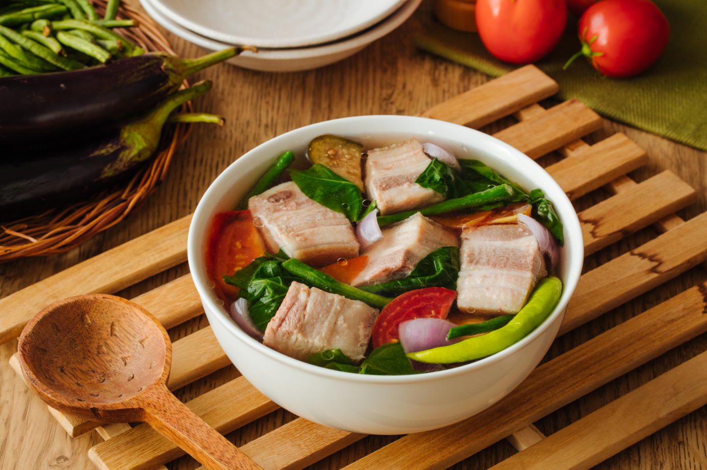

Lola Mameng's
Home
Recipe
Contact
Log In

Ingredients
2 lbs pork belly or buto-buto
1 bunch spinach or kang-kong
3 tablespoons fish sauce
12 pieces string beans sitaw, cut in 2 inch length
2 pieces tomato quartered
3 pieces chili or banana pepper
1 tablespoons cooking oil
2 quarts water
1 piece onion sliced
2 pieces taro gabi, quartered
1 pack sinigang mix good for 2 liters water
Recipes
Pork Sinigang
timer
1 hour 10 minutes
bolt
892 kcal
Pork soup in sour broth with okra, kangkong, eggplant,
and string beans. This dish is best during the cold weather.